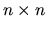
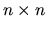
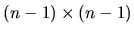

| Integral Determinant |
Write a program to find the determinant of an integral square matrix. Note that the
determinant of a square matrix can be defined recursively as follows: the determinant
of a 1 1 matrix
M = (a1,1) is just the value
|M| = a1,1;
further, the determinant of an

matrix is
1 matrix
M = (a1,1) is just the value
|M| = a1,1;
further, the determinant of an

matrix is
Here the notation M1,i is the  matrix by removing the first row and the ith column of the original matrix M.
A straightforward method of calculating the determinant of an
matrix by the recursive method will end up with n! multiplications, a very
time-consuming algorithm. To give you a feeling about this, note that 15! =
1,307,674,368,000. To reduce the time complexity, there are two ways of
modifying the original matrix for easier computation.
Using the above methods, you shall be able to write a program for computing the
determinants of matrices, even for a size like 30 30, very efficiently.
Below is an example to show how this can be done:
30, very efficiently.
Below is an example to show how this can be done:
Note that the answer shall be an integer. That is, all the operations needed are just integer operations; by reducing to floating numbers would result in the round-off errors, which will be considered as the wrong answer. Do not worry about the problem of integral overflows problem. You can assume that the given data set will not cause the integer overflow problem. What is emphasized here is the required integer precision. Anyway use of floating numbers is not forbidden.
2 5 2 3 4 3 2 3 5 1 6 7 4 8 9 0
14 -27 *